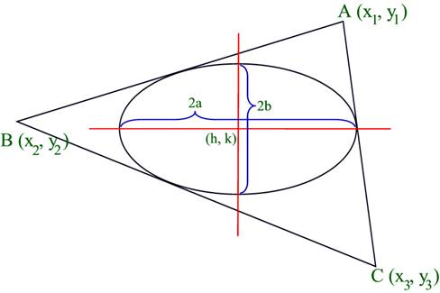
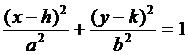

Problem I
In-Ellipse
Input: Standard Input
Output: Standard
Output
An in-ellipse of a triangle is an ellipse which touches all the sides of the triangle internally. In the figure below you can see a triangle ABC and one of its axis parallel in-ellipse.

Given the coordinate
of vertices of a triangle, your job is to find that axis parallel in-ellipse.
Note that any axis-parallel in-ellipse can be expressed uniquely with an
equation of the following form:

Here (h, k) is the
center of the ellipse (Intersection point of major and minor axis) and 2a is
the length of the major axis and 2b is the length of the minor axis. So an
axis-parallel ellipse can be uniquely described with four parameters h, k, a and b. For this problem b can be greater than a.
Input
The input file contains at most 10001 lines of inputs. Each line contains seven floating-point numbers x1, y1, x2, y2, x3, y3, El_A. The first six floating-point numbers denote that the three vertices of the triangle in counter-clockwise order are (x1, y1), (x2, y2) and (x3, y3). The seventh floating-point number El_A denotes the the area of in-ellipse of this triangle. Note that (0 ≤ x1, y1, x2, y2, x3, y3 ≤ 5000) and (0<El_A<1000000). Input is terminated by a line where the given area of the in-ellipse is negative. This line should not be processed.
For each line of input produce one line of output. This line contains four floating-point numbers. These numbers denote the value of h, k, a and b of the desired (Axis parallel in-ellipse of the given triangle and having area El_A) ellipse. All these floating-point numbers should have ten (10) digits after the decimal point. For every input there will be a solution. If there is more than one solution, any one will be accepted. There is an special judge to ignore small precision errors. Also the value of a/b should be within 0.1 and 10 to not allow ellipses that are almost straight line J.
|
97.6419300000 2129.1127667152 155.3286100000
1702.4002779560 385.0688800000 748.0494778467 1781.9759297640 138.7581800000 246.7354898358
352.2499900000 197.8134603618 54.2186200000 300.6027786815 423.6516437136 1727.1587740317 349.0465400000
479.4245277302 84.8220300000 1561.3000471558 179.7437900000 -44.3989182783 |
|
165.0883167048 1730.5402621884
11.9500482151 47.4659637479 143.3157614522 257.5968732740
11.6210876787 11.6041209071 |
Problem setter:
Shahriar Manzoor
Special Thanks: Derek Kisman